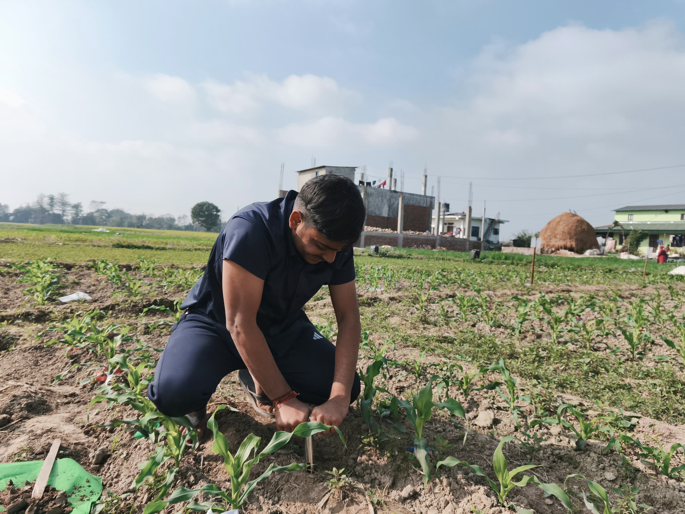
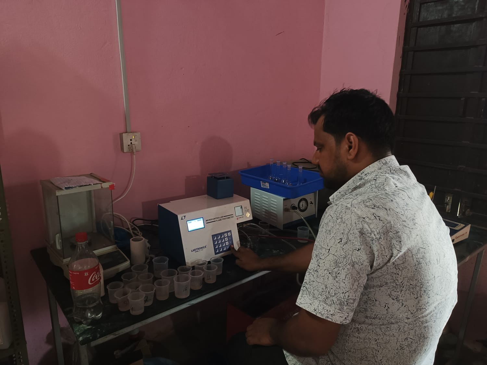
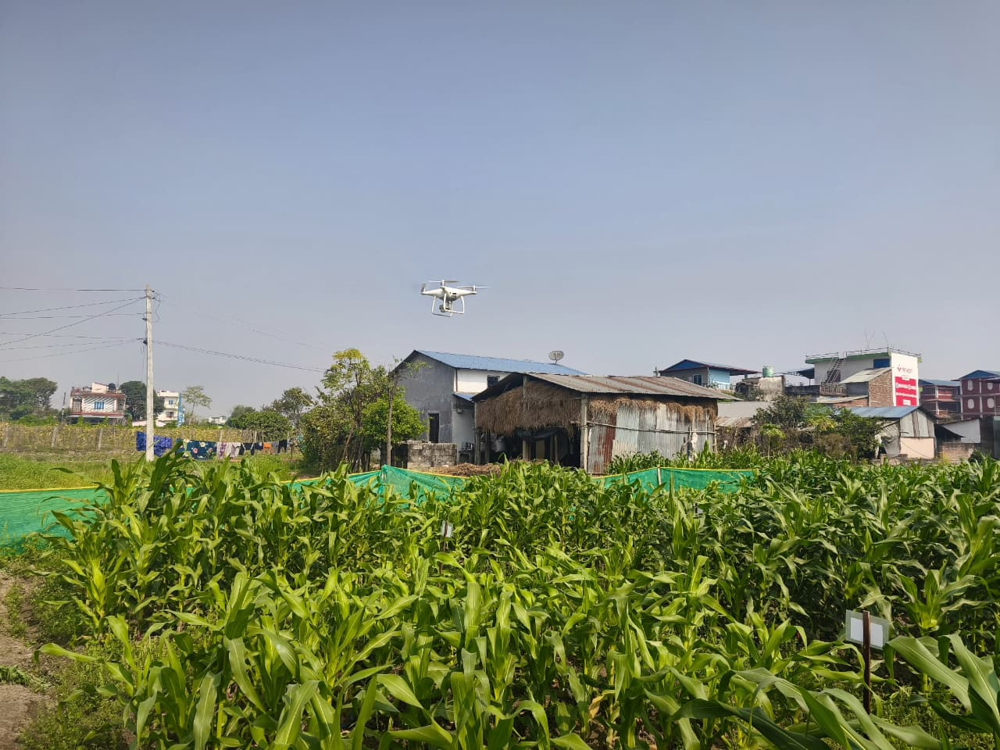
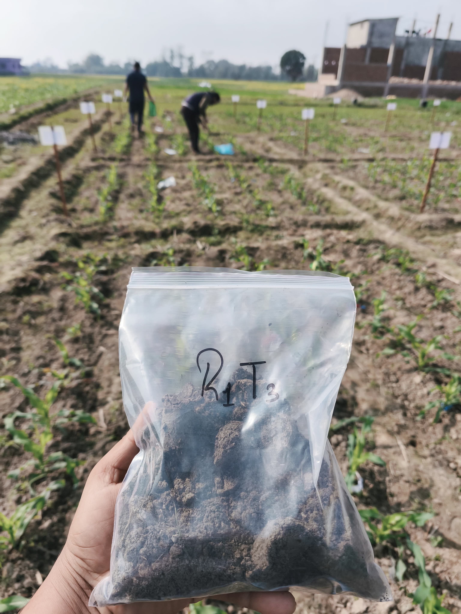
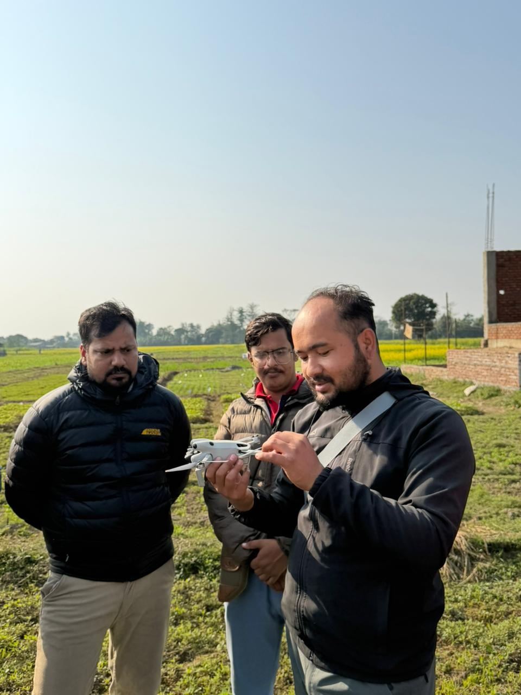
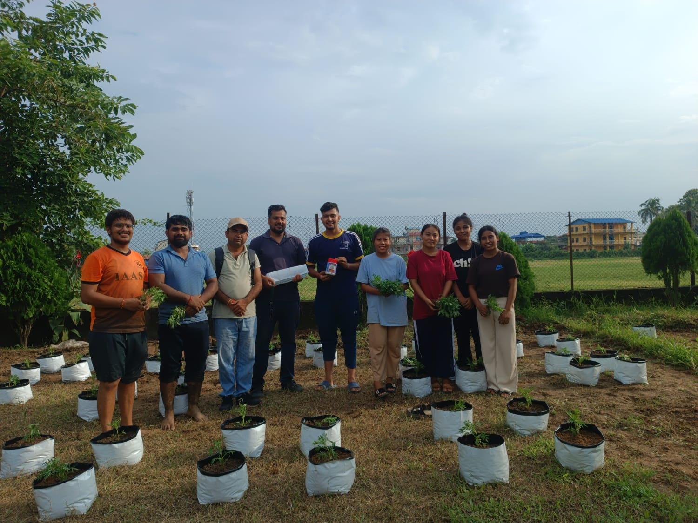

Gallery
Explore our research activities, field work, laboratory experiments, and team moments. Our gallery showcases the dynamic work of our lab.

Field Sampling
Collecting soil samples for analysis

Lab Analysis
Conducting soil testing procedures

Crop Monitoring
Assessing crop health and growth
GIS Mapping
Creating spatial soil maps

Microbial Analysis
Studying soil microorganisms
Data Analysis
Processing and analyzing research data

Collaborations
Working with partner institutions

Team Activities
Lab meetings and group discussions